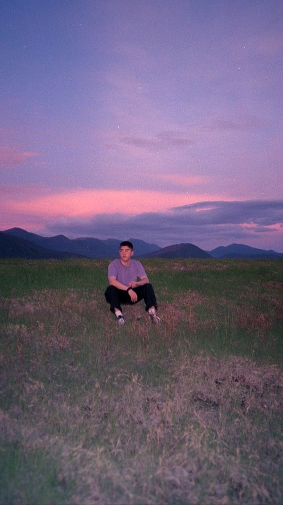
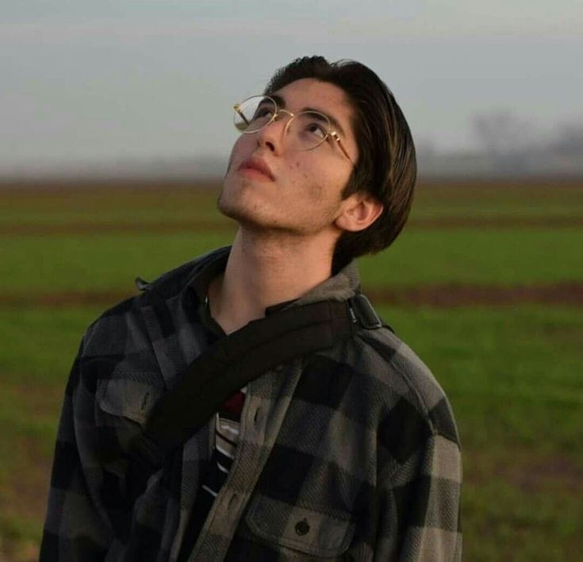

NOSOTROS
¿QUIENES SOMOS?
Kevin Eduardo Hernández Carlos (Meoqui, Chihuahua, 15 de mayo de 2000), más conocido como Kevin Kaarl, es un cantante, guitarrista, compositor y músico mexicano. Se especializa en el género de música folk. Lanzó su primer sencillo «Amor viejo» el 18 de septiembre de 2018 y empezó a captar la atención del público, consiguiendo más de siete millones de visualizaciones en YouTube. Meses después, en diciembre de ese mismo año, saltó a la fama con la publicación de «Vámonos a marte» sencillo que alcanzó más de veintitrés millones de reproducciones en YouTube y 104 millones en Spotify. Logró reconocimiento internacional gracias a la viralización de las redes sociales. En 2023 fue el primer ganador del Premio Rolling Stone en Español al artista promesa del año.
Durante su infancia y adolescencia participó en coros y bandas musicales. A los 7 años entró a un grupo juvenil en Meoqui; en la primaria, entró al coro de esa misma escuela, y años después entró a otra banda de su ciudad. En 2014 dejó de tocar la guitarra y de cantar para iniciar un proyecto de fotografía y cine. Previo a iniciar su carrera musical, retomó la guitarra, mientras que su hermano gemelo Bryan, inició actuando con la trompeta quien también hace segunda voz en sus presentaciones en vivo.

